Quiet sky
0.0 s · seed 20260916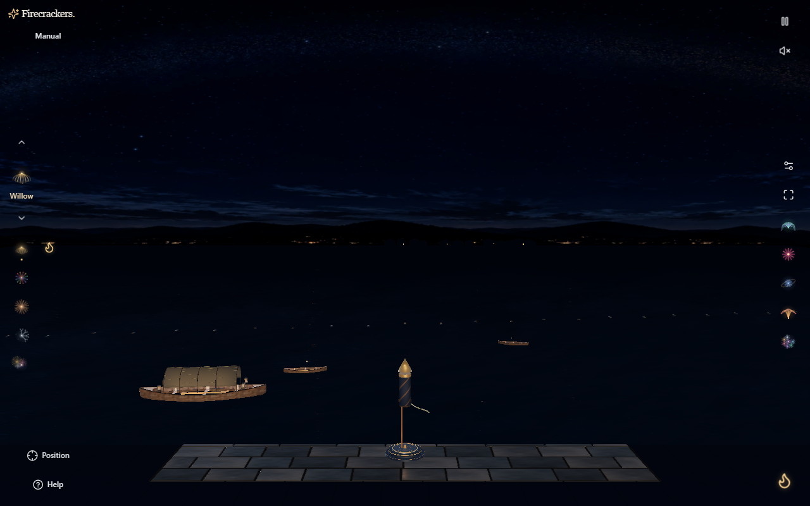
Firecrackers · actual website captures
Slide between the previous production waterfront and the new galactic preview. Each pair uses the same firework, seed, viewport and simulation time. The new star and dust arch frames a darker central space for the fireworks.
Drag each range slider, use its arrow keys, or choose a full build below the image. 0% before shows the preview; 100% before shows production.
1280 × 800 · actual hardware WebGPU

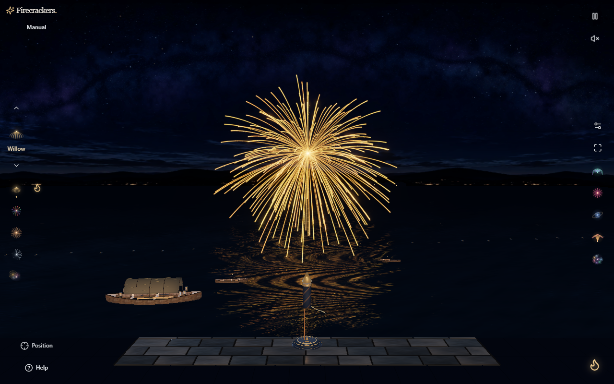
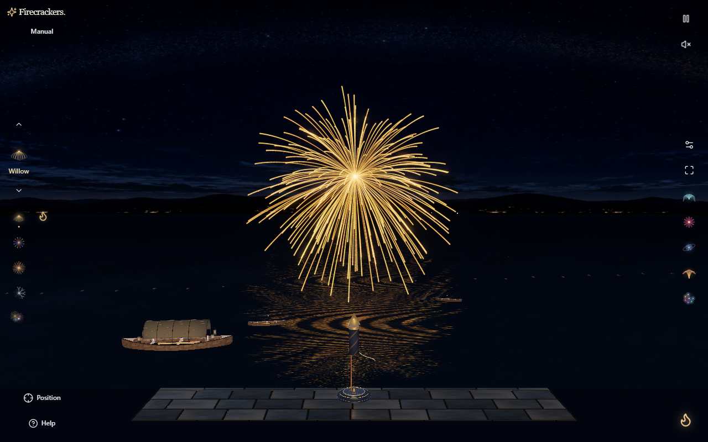
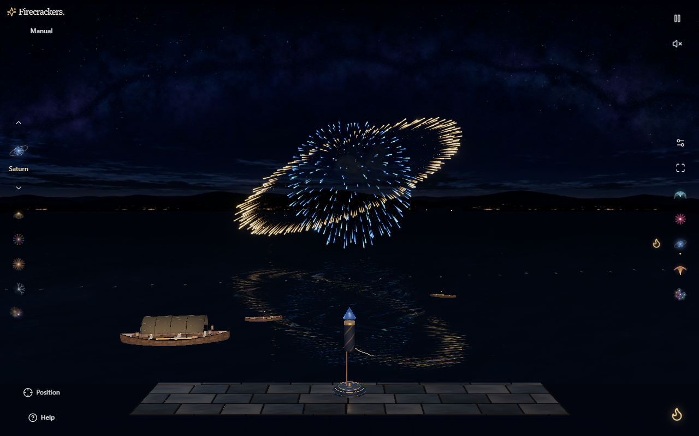
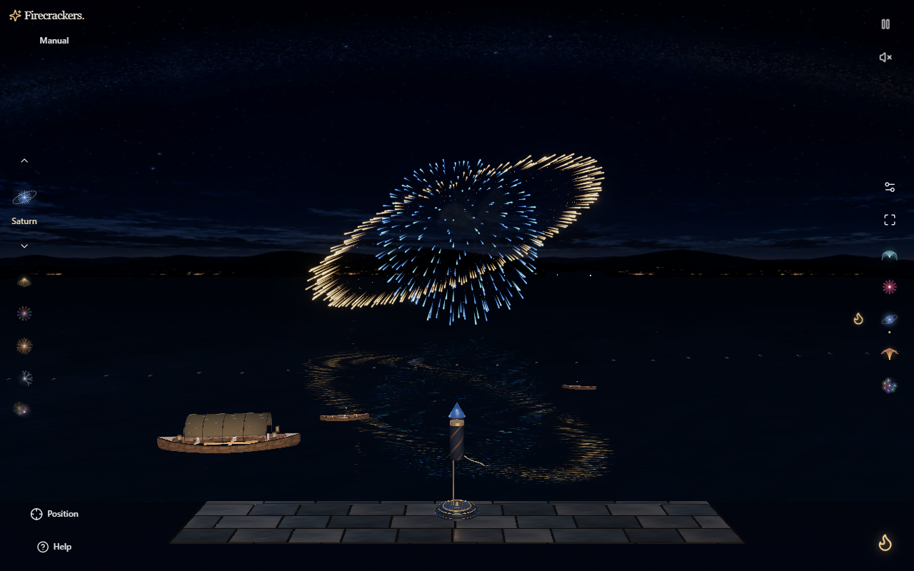
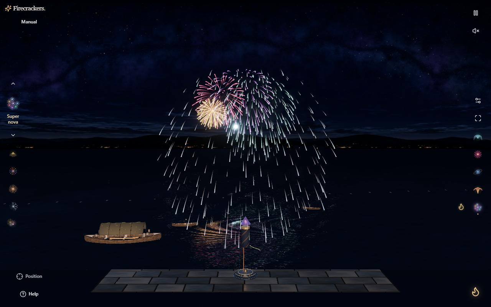
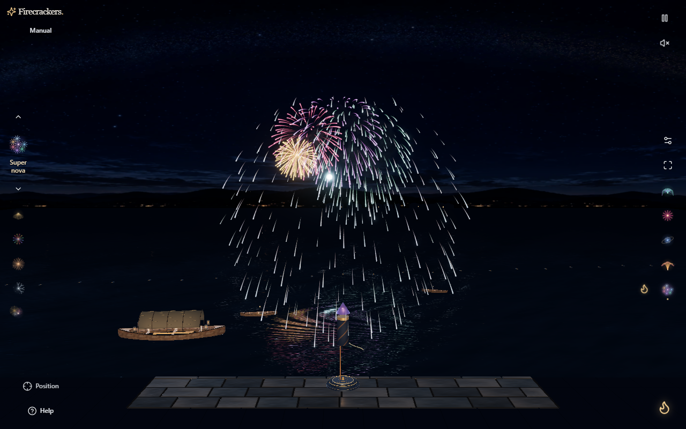
393 × 851 · phone viewport and touch emulation on the same PC
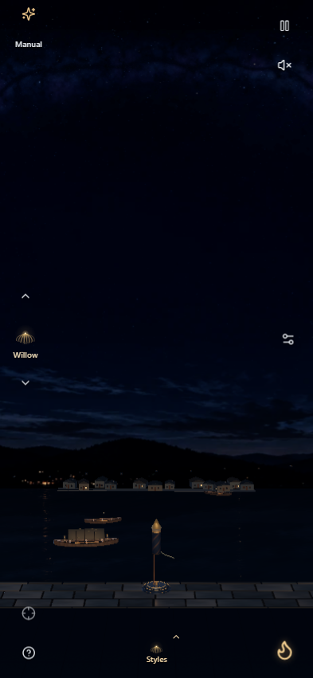
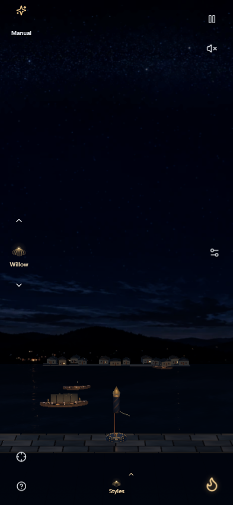
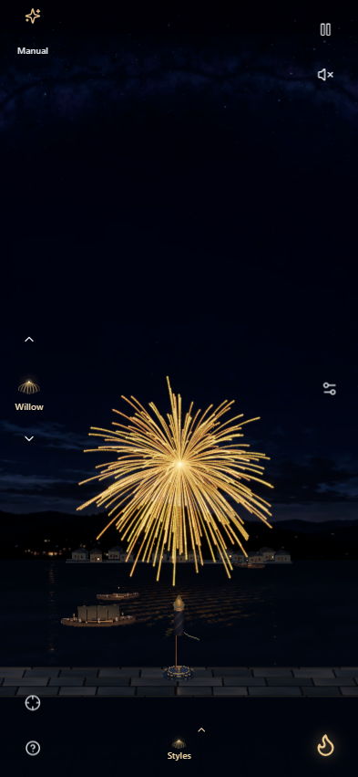
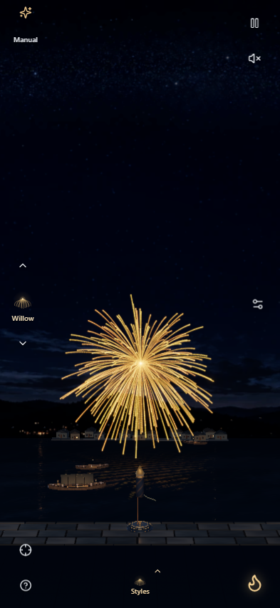
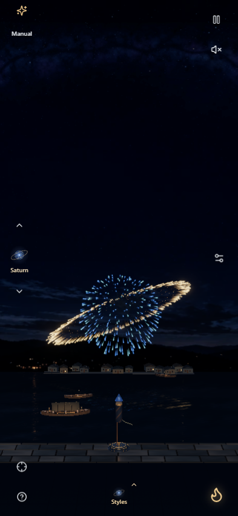
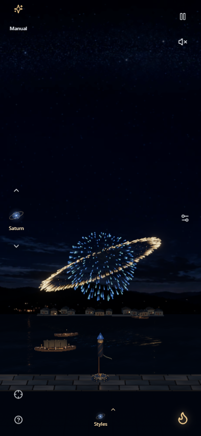
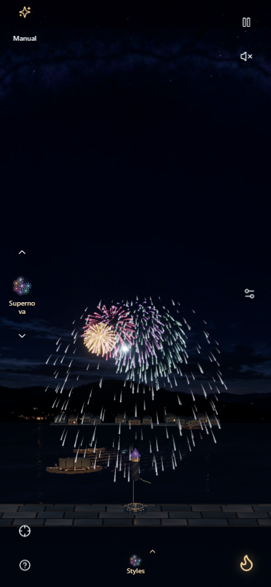
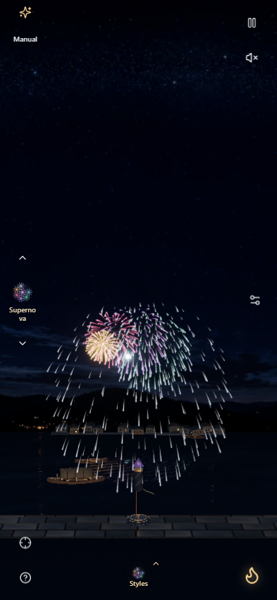
Additional preview stills from actual hardware WebGPU
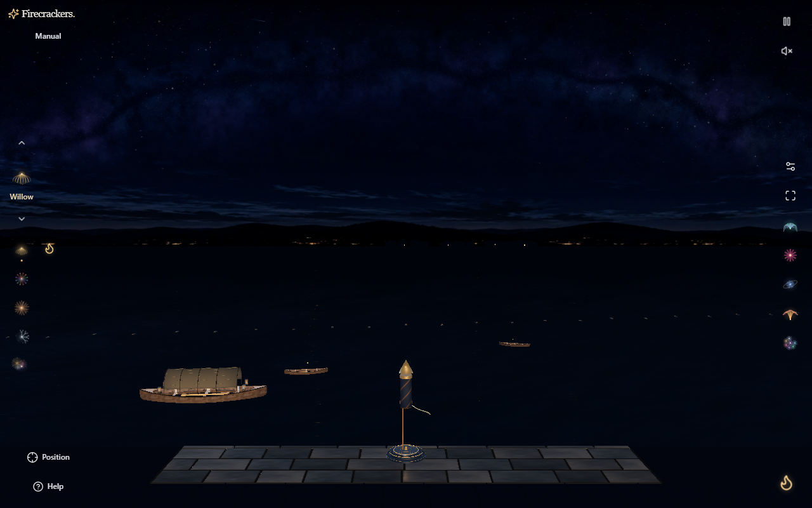
These stills show a pointer-response phase and the single seeded meteor at 9.7 seconds. Moving-star and pointer behavior is qualified in the hardware report.
Before: production 2026-09-30.4, 33 hardware checks, zero application errors.
After: preview 2026-09-30.5, 56 hardware checks, zero application errors.
The installed Chrome ran on this PC without software GPU flags. WebGPU reported Intel gen-12lp with fallback: false; the same report’s WebGL check identifies Intel UHD Graphics 770. Portrait is viewport and touch emulation on this PC.
Matched checkpoints: quiet sky 0 s; Gold Willow and Sapphire Saturn 4.9 s; Opal Supernova 7.8 s. QA freeze and deterministic 60 Hz simulation stepping provide repeatable rendered checkpoints. Capture hover/focus states can reveal different nearby Launch glyphs.
No physical-phone, thermal, completed GPU frame-time, or long-duration performance conclusion is drawn from these stills. Generated design concepts remain in the separate concept package.
dc781d21e50e6fe2680e55b1fbf3a47ec8e72b605e349b876beeecaf388b560981bf4e1160df0f21a10e29b04c9b1428128dc44be16216e1fe3a4352c06242c7Byte-identical hosted hardware report · Verified capture match manifest
The manifest records each original PNG hash, dimensions, exact simulation time and source. The 16 matched PNGs and two optional checkpoint PNGs are byte-identical copies of the browser output.